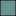

<!doctype html>
<html lang="en">
    <head>
        <meta charset="utf-8">
        <meta http-equiv="X-UA-Compatible" content="IE=edge">
        <meta name="viewport" content="initial-scale=1,user-scalable=no,maximum-scale=1,width=device-width">
        <meta name="mobile-web-app-capable" content="yes">
        <meta name="apple-mobile-web-app-capable" content="yes">
        <link rel="stylesheet" href="http://unpkg.com/leaflet@1.0.3/dist/leaflet.css">
        <link rel="stylesheet" href="css/qgis2web.css"><link rel="stylesheet" href="css/fontawesome-all.min.css">
        <link href='https://api.mapbox.com/mapbox.js/plugins/leaflet-fullscreen/v1.0.1/leaflet.fullscreen.css' rel='stylesheet' />	
        <script src="http://unpkg.com/leaflet@1.3.1/dist/leaflet.js"></script>
        <script src="js/leaflet-providers.js"></script>
        <script src='https://api.mapbox.com/mapbox.js/plugins/leaflet-fullscreen/v1.0.1/Leaflet.fullscreen.min.js'></script>
        <style>
        html, body, #map {
            width: 100%;
            height: 100%;
            padding: 0;
            margin: 0;
        }
        </style>
        <title></title>
    </head>
    <body>
        <div id="map">
        </div>
        <script src="js/qgis2web_expressions.js"></script>
        <script src="http://unpkg.com/leaflet@1.0.3/dist/leaflet.js"></script>
        <script src="js/multi-style-layer.js"></script>
        <script src="js/leaflet.pattern.js"></script>
        <script src="js/leaflet-hash.js"></script>
        <script src="js/Autolinker.min.js"></script>
        <script src="js/rbush.min.js"></script>
        <script src="data/oecd_0.js"></script>
        <script src="data/KOLIBRIcountries_1.js"></script>
        <script>
        
        // basemap source
        var basemap_carto = L.tileLayer('https://{s}.basemaps.cartocdn.com/light_all/{z}/{x}/{y}.png', {
			attribution: '&copy; <a href="https://www.openstreetmap.org/copyright">OpenStreetMap</a> &copy; <a href="https://cartodb.com/attributions">CartoDB</a>'
		}), basemap_esri = L.tileLayer('https://server.arcgisonline.com/ArcGIS/rest/services/World_Imagery/MapServer/tile/{z}/{y}/{x}', {
			attribution: ' Tiles &copy; Esri &mdash; Source: Esri, i-cubed, USDA, USGS, AEX, GeoEye, Getmapping, Aerogrid, IGN, IGP, UPR-EGP, and the GIS User Community'
        });

        var map = L.map('map', {
			zoomControl: true,
			maxZoom: 19,
			layers: [basemap_esri, basemap_carto]
		})// .fitBounds([[52.38884, 12.99408], [52.697742041, 13.7397442714]]);
		
/*         // fullscrenn control
		map.addControl(new L.Control.Fullscreen({
			title: {
				'false': 'View Fullscreen',
				'true': 'Exit Fullscreen'
			}
		})); */

        // bounding box
        var hash = new L.Hash(map);
        var bounds_group = new L.featureGroup([]);
        function setBounds() {
            if (bounds_group.getLayers().length) {
                map.fitBounds(bounds_group.getBounds());
            }
        }

        function pop_oecd_0(feature, layer) {
            var popupContent = '<table>\
                    <tr>\
                        <td colspan="2">' + (feature.properties['OBJECTID'] !== null ? Autolinker.link(String(feature.properties['OBJECTID'])) : '') + '</td>\
                    </tr>\
                    <tr>\
                        <td colspan="2">' + (feature.properties['NAME'] !== null ? Autolinker.link(String(feature.properties['NAME'])) : '') + '</td>\
                    </tr>\
                </table>';
            layer.bindPopup(popupContent, {maxHeight: 400});
        }

        function style_oecd_0_0() {
            return {
                pane: 'pane_oecd_0',
                opacity: 1,
                color: 'rgba(0,0,0,1.0)',
                dashArray: '',
                lineCap: 'butt',
                lineJoin: 'miter',
                weight: 1.0, 
                fill: true,
                fillOpacity: 1,
                fillColor: 'rgba(104,146,140,1.0)',
            }
        }
        map.createPane('pane_oecd_0');
        map.getPane('pane_oecd_0').style.zIndex = 400;
        map.getPane('pane_oecd_0').style['mix-blend-mode'] = 'normal';
        var layer_oecd_0 = new L.geoJson(json_oecd_0, {
            attribution: '<a href=""></a>',
            pane: 'pane_oecd_0',
            onEachFeature: pop_oecd_0,
            style: style_oecd_0_0,
        });
        bounds_group.addLayer(layer_oecd_0);
        map.addLayer(layer_oecd_0);
        function pop_KOLIBRIcountries_1(feature, layer) {
            var popupContent = '<table>\
                    <tr>\
                        <td colspan="2">' + (feature.properties['OBJECTID'] !== null ? Autolinker.link(String(feature.properties['OBJECTID'])) : '') + '</td>\
                    </tr>\
                    <tr>\
                        <td colspan="2">' + (feature.properties['NAME'] !== null ? Autolinker.link(String(feature.properties['NAME'])) : '') + '</td>\
                    </tr>\
                </table>';
            layer.bindPopup(popupContent, {maxHeight: 400});
        }

        function style_KOLIBRIcountries_1_0() {
            return {
                pane: 'pane_KOLIBRIcountries_1',
                opacity: 1,
                color: 'rgba(114,133,132,1.0)',
                dashArray: '',
                lineCap: 'butt',
                lineJoin: 'miter',
                weight: 1.0, 
                fill: true,
                fillOpacity: 1,
                fillColor: 'rgba(31,120,180,1.0)',
            }
        }
        var pattern_KOLIBRIcountries_1_1 = new L.StripePattern({
            weight: 0.26,
            spaceWeight: 2.0,
            color: '#000000',
            opacity: 1.0,
            spaceOpacity: 0,
            angle: 315
        });
        pattern_KOLIBRIcountries_1_1.addTo(map);
        function style_KOLIBRIcountries_1_1() {
            return {
                pane: 'pane_KOLIBRIcountries_1',
                stroke: false,
                fillOpacity: 1,
                fillPattern: pattern_KOLIBRIcountries_1_1
            }
        }
        map.createPane('pane_KOLIBRIcountries_1');
        map.getPane('pane_KOLIBRIcountries_1').style.zIndex = 401;
        map.getPane('pane_KOLIBRIcountries_1').style['mix-blend-mode'] = 'normal';
        var layer_KOLIBRIcountries_1 = new L.geoJson.multiStyle(json_KOLIBRIcountries_1, {
            attribution: '<a href=""></a>',
            pane: 'pane_KOLIBRIcountries_1',
            onEachFeature: pop_KOLIBRIcountries_1,
            styles: [style_KOLIBRIcountries_1_0,style_KOLIBRIcountries_1_1,]
        });
        bounds_group.addLayer(layer_KOLIBRIcountries_1);
        map.addLayer(layer_KOLIBRIcountries_1);
        var baseMaps = {
			"Satellite view": basemap_esri,
			"Standard view": basemap_carto,			
        };        
        L.control.layers(baseMaps,{' KOLIBRI countries':
                         layer_KOLIBRIcountries_1,' oecd': layer_oecd_0,}).addTo(map);
        setBounds();
        </script>
    </body>
</html>
